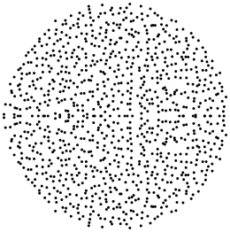

2D Examples
Eigenvalues of a 1000 × 1000 random matrix
Plot(map(Point,eigvals(randn(1000,1000))))
randcolor() = rand(Bool) ? "Blue" : "Yellow"
L = Polygon2D[]
for i=1:100
for j=1:100
push!(L,box(i,j,i+1,j+1;
fillpen=Pen(color=randcolor()),
pen=NoPen()))
end
end
cairo()
P = Plot(L;border=0)